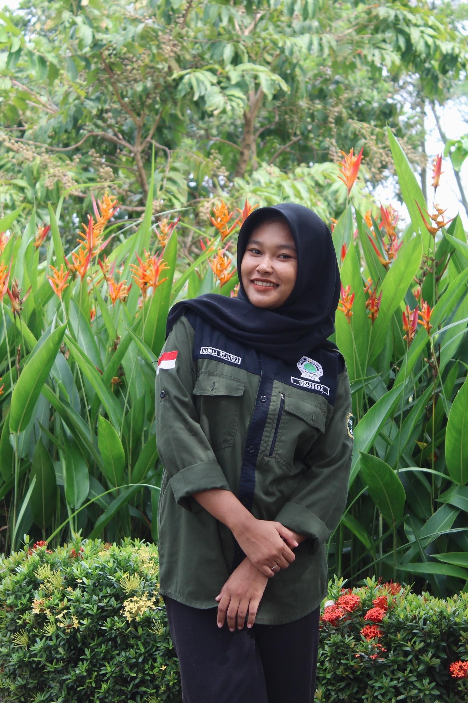
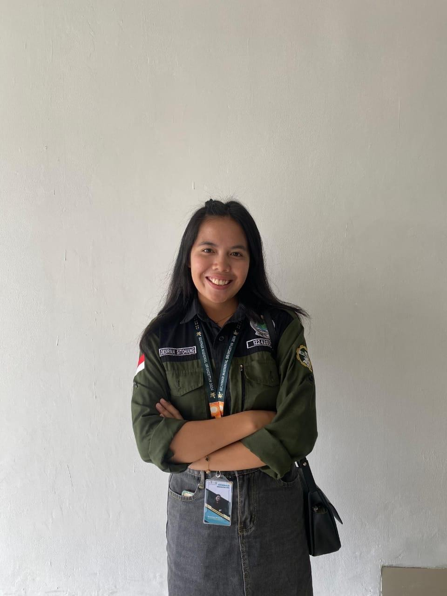
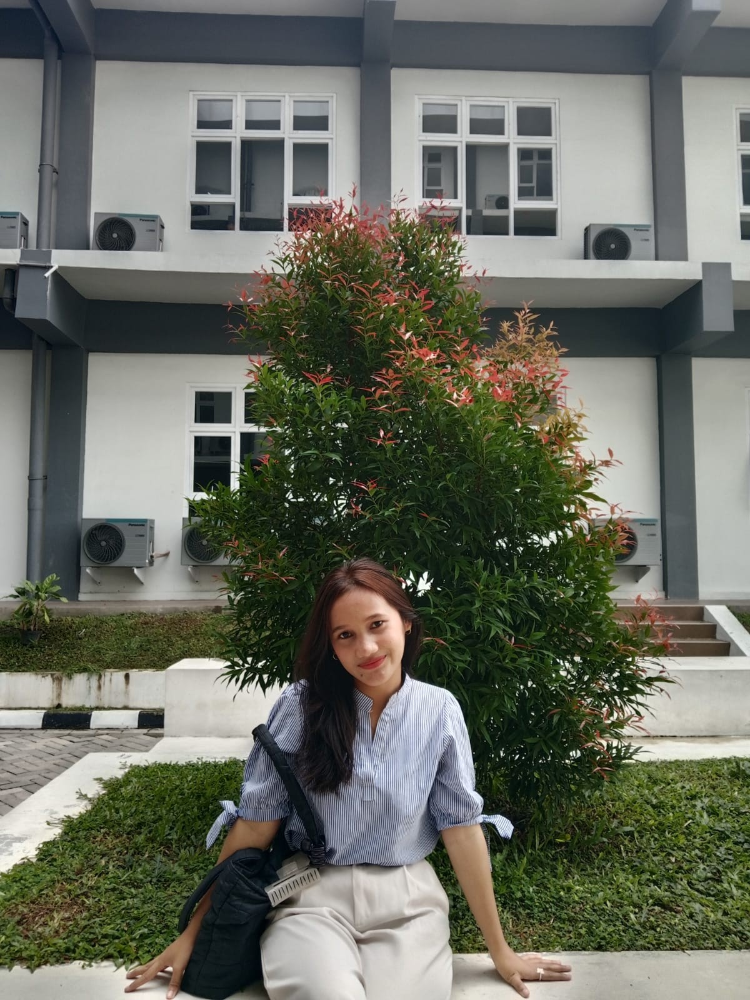
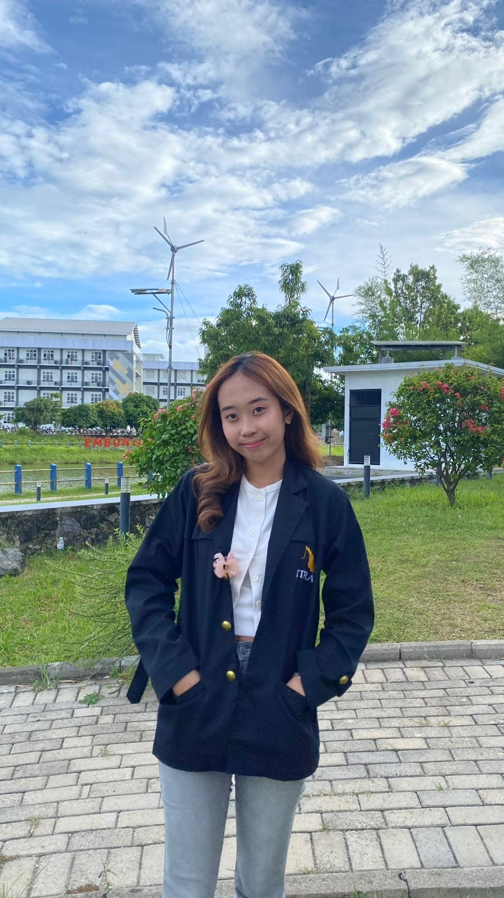

Tim Kami

Nabilla Wilantika Purbaningrum
Ketua Kelompok 10
Instagram

Desrina Kristin Sitohang
Sekretaris Kelompok 10
Instagram

Cecilia Simangunsong
Bendahara Kelompok 10
Instagram

Vina Destiana R.
Penanggungjawab Luaran Wajib
Instagram
Dwi Cesya Simatupang
PenanggungJawab Luaran Tambahan
Instagram